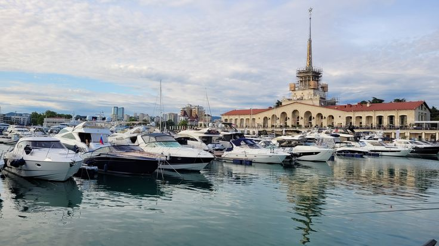
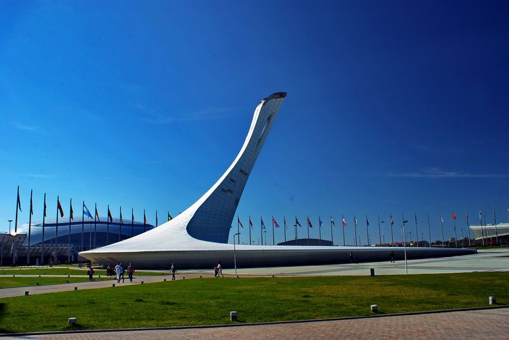
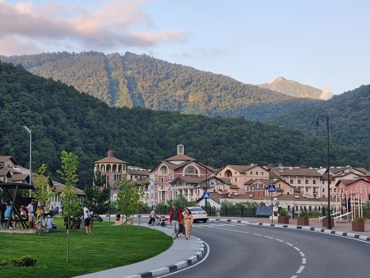

Day 1: Central Sochi & the Seaside

Morning: Sochi Seaport
Start your day at Sochi Seaport. Enjoy the waterfront views and explore the surrounding streets.
Afternoon: Explore the City Centre
Walk along Navaginskaya Street and take a break for lunch at a local cafe.
Evening: Time by the Sea
Finish the day with a walk along the central seaside promenade and enjoy the sunset.
Where to Eat
Looking for a place to eat? Explore our selection of restaurants in central Sochi.
Day 2: Olympic Park & Sirius

Morning: Explore the Olympic Park
Start your day with a walk around the Olympic Park. See Fisht Stadium and the Olympic cauldron, two landmarks of the 2014 Winter Games.
Afternoon: The Olympic Village
Explore the former coastal Olympic Village area and take a break for lunch at a local cafe.
Evening: Imeretinskaya Promenade
Head to the seaside promenade for a relaxed walk. Enjoy the sea views and stop for dinner along the coast.
Where to Eat
Looking for a place to eat? Explore our selection of restaurants in Olimpic Park.
Day 3: Krasnaya Polyana & the Mountains

Morning: Travel to the Mountains
Travel to Rosa Khutor in the Krasnaya Polyana area. Begin with a walk along the Mzymta River and enjoy the mountain scenery.
Afternoon: Views from Above
If weather and operating conditions allow, take a cable car into the mountains. Check ticket prices, opening hours and available routes before your visit.
Evening: Dinner and the Journey Back
Return to the riverside area for an early dinner before travelling back to the coast. Check the last train or bus in advance.
Where to Eat
Looking for a place to eat? Explore our selection of restaurants in Krasnaya Polyana.